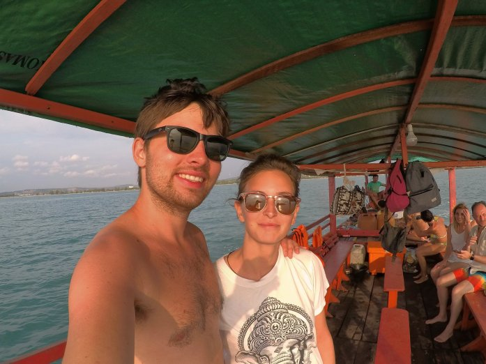

Dopo un lungo viaggio in bus abbiamo sostato per quasi una settimana a Sihanoukville (Otres Beach), località che costeggia il sud della Cambogia, per abbronzare un po’ le chiappe chiare e riprenderci dalla malattia (che però ha deciso di rimanerci fedele ed affezionata ancora per un bel po’ di tempo… ma d’altronde “non è un vero viaggio asiatico se non prendi almeno un’influenza intestinale” come dice il nostro amico Nessi, e noi non volevamo perderci nessuna sfumatura di questo viaggio).
Che dire… ha piovuto molto (fulmini così vicini non li avevamo mai visti!), abbiamo assaggiato il tradizionale Amok di pesce consigliatoci dagli zii Ivan&Paola (molto buono! Però il curry paste era migliore in Thailandia secondo noi), prenotato una gita in barca e passeggiato fino al centro città dove abbiamo fatto fare il visto per il Vietnam (che paura lasciare il passaporto per un giorno ad un’ “agenzia turistica” che somigliava più ad un mercato!)
La gita in barca si √® rivelata un po‚Äô una fregatura. Secondo il programma avremmo raggiunto un‚Äôisoletta per fare snorkeling, pescato e cucinato pesce, e infine ammirato il plancton bioluminescente. Woooow sembrava bellissimo! Invece: l‚Äôacqua del mare (soprattuto dove ci ha portato) era sporchissima, di pesci neanche l‚Äôombra (cos√¨ come della cena di conseguenza ahah) e il plancton non era visibile a causa della luna piena (o almeno questo √® quello che ci ha detto la guida, nel suo unico intervento che esulava dal dormire su un‚Äôamaca e lasciarci per i fatti nostri tutto il tempo). Amen, ci rifaremo nelle isolette al sud della Thailandia alla fine del nostro viaggio! üôÇ
Così come il resto della Cambogia, anche la spiaggia era terribilmente sporca. Tranne che per qualche metro davanti al nostro albergo, il resto era ricoperto di rifiuti e da canali di scolo maleodoranti. L’acqua, anche se non molto trasparente, era abbastanza bella e calda. È un peccato perché, secondo l’opinione condivisa con altre persone che abbiamo conosciuto, la zona ha delle grandi potenzialità. Molti investitori cinesi negli ultimi anni si stanno fiondando su questa spiaggia trasformando gli alloggi locali in grandi resort, il che renderebbe il posto più turistico (lato negativo) ma potrebbe indurre a una maggiore attenzione verso la pulizia dell’ambiente (lato positivo).
La nostra permanenza è stata comunque deliziata dalla compagnia di un grande staff dell’albergo, dalla lettura di un bel libro e da tramonti mozzafiato!
Comment Section